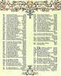

|

Discharge certificate
|
BOOK OF REMEMBRANCE
The Books of Remembrance commemorate the names of the thousands
of Canadians who died for Canada in time of war. These books are displayed in the Memorial Chamber
in the Parliament in Ottawa. One
page is turned each day. Charles's name appears in the book covering
the year 1941, page 27. It is the first at the top of the left-hand
column.
(Charles had re-enlisted for the Second World War and
died in Kingston, but that is another war, and so another
story...)
PTE CONSIGNY,CHARLES VGC
Private Consigny,Charles
Veterans Guard Canada

|
|
POSTCARDS The postcards are in the photo album
devoted to the Consignys (see Francine). They have also been
scanned for the website devoted to the Consignys (link below).
|
WAR DIARIES
Link
to the war diaries, including that of Charles's first unit,
the D.A.C., and of his main unit, the 1st Canadian Heavy
Battery. You will also find the diaries of the medical units where
Charles was hospitalized.
|